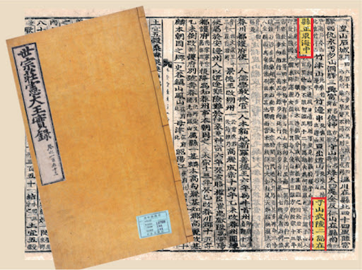

독도에 대한 최초의 기록은 삼국사기에 등장합니다. 신라 지증왕 13년(512년)에 이사부 장군이 우산국(울릉도와 독도)을 신라 영토로 편입한 기록이 있습니다. 또한, 고려사와 조선왕조실록에도 독도에 대한 언급이 있으며, 이를 통해 독도가 오랜 기간 한국의 영토였음을 알 수 있습니다.
19세기 말에서 20세기 초에 이르기까지 독도는 여러 국제적 사건의 무대가 되었습니다. 1900년 대한제국 고종 황제는 칙령 제41호를 통해 독도를 울릉군에 속하게 하여 독도의 영유권을 재확인하였습니다. 그러나 1905년 일본은 러일 전쟁 중에 독도를 불법으로 편입하였고, 이후 한국과 일본 간의 영유권 분쟁이 시작되었습니다.
광복 이후 대한민국 정부는 독도의 영유권을 확고히 하였고, 현재 독도는 행정구역상 경상북도 울릉군에 속해 있습니다. 대한민국은 독도에 대한 다양한 관리 및 보호 활동을 통해 독도의 영토 주권을 강화하고 있습니다. 또한, 독도는 한국 국민들에게 중요한 상징적 의미를 지니고 있으며, 많은 사람들이 독도를 방문하고 있습니다.
